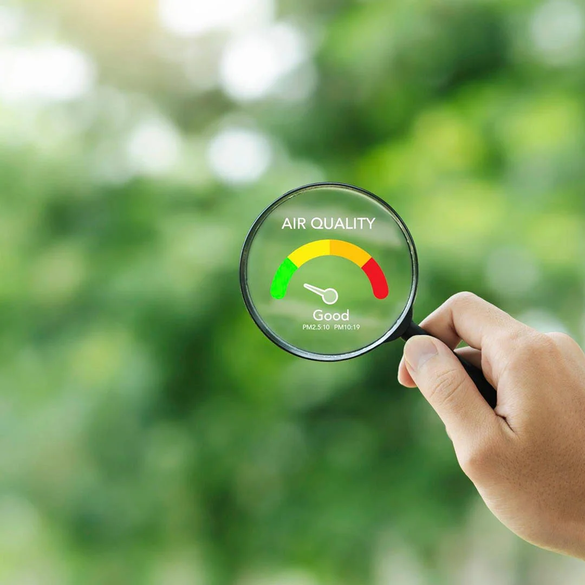
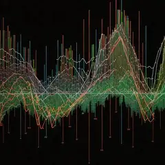

Kipkemoi Vincent
👨💻 About Me
A highly skilled Data Scientist with over 5 years experience in machine learning, data analytics, and predictive modeling. I specialize in anomaly & fraud detection, credit scoring, and developing scalable machine Learning models for capital markets. With a strong background in Python, SQL, and data visualization, I excel at transforming complex datasets into actionable insights across diverse sectors, including climate, fintech, healthcare, and agri-tech.
Passionate about leveraging advanced analytics to optimize decision-making, minimize risks, and deliver data-driven solutions for business growth. I'm enthusiastic about driving impact through data, and continuously refining processes to improve efficiency and innovation. I am open to remote or Nairobi-based opportunities.
🎓 Education
MPhil in Environmental Sciences
The Cyprus Institute, Nicosia, Cyprus
Thesis: Practicalities in Machine Learning Calibration of Measurements from Low Cost Gas Sensors.
Scholarship: Cyprus Institute Merit Scholarship
Grade: 84%
MSc in Mathematical Sciences (Data Science)
University of Western Cape / AIMS, South Africa
Thesis: ML on High-Resolution Aerial Imagery for Vegetation Mapping.
Scholarship: MasterCard Foundation Scholarship
Grade: Good Pass [70-84%]
BSc. in Mathematics (Statistics & Operations Research)
University of Nairobi, Kenya
Scholarship: Finlays undergraduate Scholarhip
Grade: First Class Honours
Skills
💻 Stack
📋 Professional Summary
- 5+ years of experience delivering Data Science and ML solutions across sectors (Fintech, Climate, Healthcare).
- Skilled in data analytics, predictive analytics, credit risk analysis, anomaly & fraud detection, credit scoring, time series forecasting, and scalable ML model deployment.
- Proficient in Python, R, SQL, Scikit-learn, CNN, OpenCV, TensorFlow, RF, LSTM, Catboost, XGBoost, LightGBM, PyOD models, and AWS.
- Experienced with MLOps workflows: Streamlit, Docker, Kubernetes, MLflow, FastAPI, and CI/CD pipelines.
💼 Recent Roles
Data Scientist (R&D)
Prospect 33, New York, Remote
Feb 2025 – Date
Responsible for research, development, and deployment of semi-supervised, active learning-based anomaly detection models tailored for financial and operational datasets. Emphasized adaptive model tuning through domain expert feedback loops to maintain high precision and reduce false positive rates in complex capital market environments.
- Developed and deployed an active-learning-based Isolation Forest model that incorporated domain-specific client feedback and expert insights to iteratively improve accuracy and reduce false positives.
- Co-developed DIVA and LEAP, flagship fraud and anomaly detection platforms at Prospect 33 for capital markets, improving detection accuracy and accelerating time-to-value.
- Enhanced backend and frontend capabilities within the LEAP application using Python, Django, and Django REST Framework to improve performance, scalability, and developer efficiency.
- Developed an explainability framework integrating SHAP, LIME, and gradient-based methods, enabling clear, localized insights into anomaly detection decisions to boost stakeholder trust and regulatory alignment.
- Engaged with stakeholders to gather and prioritize product requirements, aligning business needs with development efforts.
Data Scientist
Twino (Moneza Kenya), Westlands, Nairobi, Kenya
May 2023 – Jan 2025
Responsible for developing and managing loan portfolio credit scoring models for payday loans (PDL) and buy now pay later (BNPL) products. Analyzed trends and risks, generated actionable reports, implemented risk rules, and collaborated with teams to ensure data accuracy and minimize fraud.
- Developed and deployed credit scoring (XGBoost) and fraud detection (CatBoost) models using TransUnion and SEON data, significantly improving loan approval accuracy and strengthening fraud prevention measures.
- Created an automated loan default dashboard tracking daily, weekly, and monthly default rates, enabling proactive risk monitoring and delivering actionable insights.
- Automated payment and debt collection reporting for back-office teams using PostgreSQL, streamlining operations and improving data-driven decision-making.
- Gained in-depth expertise in SQL querying using DBeaver and PostgreSQL. Integrated insights into Preset for automated dashboards, enhancing real-time reporting.
- Led and mentored a team of junior analysts, driving the successful delivery of data-driven solutions in business intelligence, fraud detection, and credit risk analysis.
- Partnered cross-functionally to align technical solutions with business objectives, integrating fraud detection, credit risk, and compliance strategies for impactful outcomes.
Featured Projects
🤖 Lending Automation - ML for Credit Scoring
This project delivers an automated loan approval system using ML models like Random Forest, XGBoost, and LightGBM. It replaces manual decisions with fast, scalable processes. Key tasks included cleaning data, feature engineering, and evaluating model fairness—enabling personalized lending, dynamic pricing, and more accurate, data-driven credit scoring.
🌍 Air Quality Monitoring in Nicosia, Cyprus
This project calibrates low-cost air sensors using ML models like XGBoost and ANN to match reference-grade accuracy. It analyzes six months of data to study sampling strategies, calibration frequency, and environmental interference. Results support affordable, large-scale urban air quality monitoring that meets EU and EPA standards.
🛡️ Anomaly and Fraud Detection in Finance
This project uses PyOD and FLAML AutoML to detect anomalies in imbalanced credit card datasets. Models like Isolation Forest and Autoencoders are evaluated using precision, recall, and ROC-AUC. Sampling techniques (SMOTE, oversampling) enhance model performance, producing a high-precision fraud detection pipeline for robust financial risk management.
🏥 Healthcare Accessibility in Nairobi,Kenya
This project evaluates healthcare access in Nairobi using demographic and facility data. Anchored in SDG 3, it identifies service gaps by analyzing population coverage, operational hours, and accessibility. Insights support policy interventions aimed at strengthening healthcare delivery and promoting well-being for all city residents.
🩺 COVID-19 Detection using Deep Learning CNN
This project uses CNNs (ResNet50, DenseNet169, MobileNetV2) to detect COVID-19 from chest CT scans. Through preprocessing, augmentation, and ensemble modeling, it achieves high accuracy. Transfer learning boosts performance on real-world data, providing fast and reliable diagnosis support for clinical decision-making in pandemic response.
📉 Customer Churn Prediction
This project predicts customer churn using survival analysis and ML models, enabling telecoms to target at-risk users. It analyzes historical behavior to estimate churn risk and customer lifetime value. An interactive tool supports data-driven retention strategies, helping reduce attrition and improve loyalty through personalized interventions.
📊 Sales Forecasting
This project analyzes sales data using ARIMA, SARIMA, and Prophet to forecast trends and seasonality. The workflow includes preprocessing, stationarity testing, model tuning, and evaluation. Insights help optimize inventory, resource planning, and decision-making—reducing forecast errors and improving operational efficiency through accurate, data-driven sales forecasting.